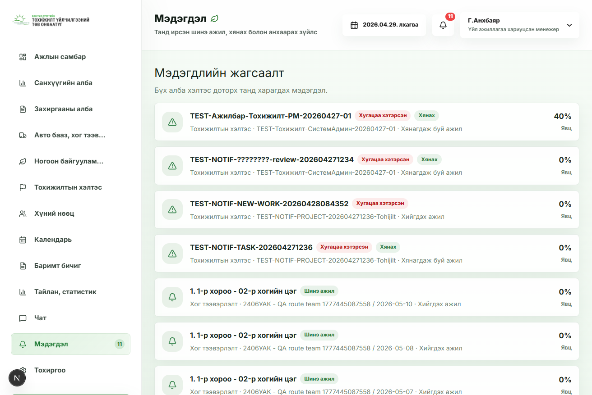

CEO / Захирал / Ерөнхий менежер
Ерөнхий хяналт, бүх алба, тайлан, худалдан авалт, авто бааз, HR зэрэг олон сэдэв харагдана.
App доторх /help хэсэг хэрэглэгчийн role, group flags, хэлтсийн хүрээгээр зөвхөн тухайн хүнд хэрэгтэй сэдвүүдийг харуулна. Хайлт дээр “тайлан”, “зураг”, “батлах”, “машин”, “HR” гэх мэт үг бичихэд тохирох заавар clickable байдлаар гарна.
Энэ HTML нь сургалт, танилцуулгад зориулсан offline хувилбар. Бодит app дээрх заавар login хийсэн хэрэглэгчийн эрхээр автоматаар шүүгдэнэ.
Ерөнхий хяналт, бүх алба, тайлан, худалдан авалт, авто бааз, HR зэрэг олон сэдэв харагдана.
Өөрийн хэлтсийн ажил үүсгэх, хянах, батлах, буцаах, тайлан харах сэдвүүд гарна.
Өөрт болон багт оноогдсон ажил, тайлан мэдээ оруулах, зураг хавсаргах, буцаагдсан тайлан засах заавар гарна.
Зөвхөн өөрт оноогдсон ажил, mobile тайлан илгээх, мэдэгдэл, профайл зэрэг minimum урсгал харагдана.
Ажилтан, чөлөө, өвчтэй, сахилга, шилжилт хөдөлгөөний бүртгэлийн тусламж гарна.
Засварын хүсэлт, машин, үнийн санал, санхүү, төлбөр, шийдвэрийн урсгал харагдана.


